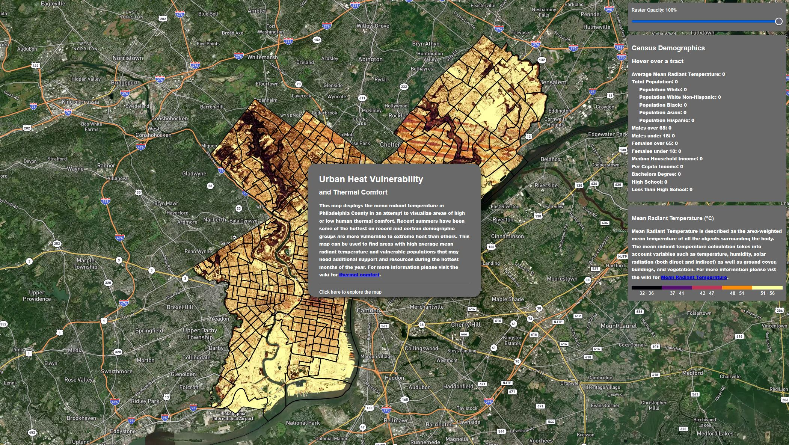

Visualizing areas of excessive heat in Philadelphia
with Mean Radiant Temperature.

This web map was created using a few different data sources and tools. First LiDAR point clouds of Philadelphia were processed into DEM and DSM raster images using Python and ArcPy. Those DEM and DSM images were then added to a SOLWEIG (Solar and LongWave Environmental Irradiance Geometry) model along with climate data, direct as well as indirect solar radiation data, building footprints, and vegetation data. The SOLWEIG model is part of the Urban Multi-scale Environmental Predictor or UMEP plugin for QGIS. You can read more about the model and plugin
here.
The resulting raster is added into ArcGIS Pro and given a color scale based on the pixel values which correspond with the mean radiant temperature for that area. This colorized raster is then exported and uploaded to MapBox along with a census tract shapefile of Philadelphia County that includes some demographic information about the populations in each census tract.